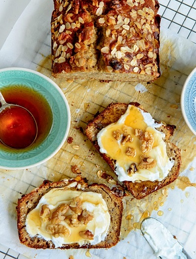

Banana-bread-with-honey-oats-walnuts

Source
Description
A super simple to make, moist, melt in your mouth delicious Banana Bread with Honey, Oats & Walnuts. This one’s perfect to freeze slice and eat whenever you want.
Ingredients
- 3 Ripe/over ripe Bananas, mashed up
- 1/2 Cup butter (1 small stick)
- 1/2 cup Honey
- 1/2 Cup Brown Sugar
- 1/2 tsp vanilla
- 2 eggs (room temperature)
- 1/4 tsp Baking Soda
- 1 tsp Baking powder
- 1/3 tsp Cinnamon Powder
- 1/4 tsp salt
- 1 1/4 cup of Flour
- 1/2 cup Oats
- 1 cup Chopped Walnuts
Steps
- Preheat your oven to 350F. In a large mixing bowl or the bowl of a stand up mixer, add the mashed bananas (over ripe bananas are best, mine weren't), a stick of butter, the honey, brown sugar, vanilla, eggs, baking soda, baking powder, cinnamon powder and salt.
- Using the paddle attachment on medium speed, mix all the ingredients together, till it's all combined. Don't worry too much if there are a few banana lumps here and there.
- Add the flour and oats and barely mix it to come together. Infact you can just hand mix it.
- Add 3/4 cup of the chopped walnuts and fold in with a spatula or wooden spoon. You really don't want to over beat this batter once you add the flour and oats to it, that's what keeps it moist and crumbly.
- Pour the batter into a loaf tin and sprinkle the left over nuts & oats over the top.
- Bake at 350F for 45-55 minutes. Check with a tooth pick to see if the bread is done. If the toothpick comes out clean after poking it through the center of the cake, it's done.
- Take the cake out and let it cool for a 10 minutes, but you have to try a slice while it's still warm....and you have to try it with a little butter or honey yogurt....mmmmmm it just melts in your mouth! It's soooo good.